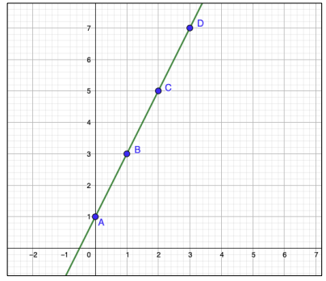

FUNÇÃO CONSTANTE E FUNÇÃO AFIM
FUNÇÃO CONSTANTE
Uma função recebe o nome de
função constante quando a cada
elemento de x ∈ R associa sempre o
mesmo elemento c ∈ R.

O gráficoda função constante é uma reta paralela ao eixo do x
passando pelo ponto (0, 2).
|
FUNÇÃO AFIM
Uma função f: R ➡ R chama-se função afim quando existem dois
números reais a e b tal que f(x) = ax + b, para todo x ∈ R.
|
EXEMPLOS:
(a) f(x) = −5x + 2
(b) f(x) = 9/3x - 1
(c) f(x) = 8x
(d) 𝑓(x) = −2/6x + 5/10
DOMÍNIO E IMAGEM
O conjunto domínio e imagem de uma Função Afim, sempre serão
todos os números Reais. Não haverá restrição para nenhum deles.
D = {x ∈ R} e
Im = {y ∈ R}
|
GRÁFICO
O gráfico de uma função afim é a representação dos pontos dessa função
no Plano Cartesiano. Como todos esses pontos ficam alinhados e para
todo
valor de x sempre teremos um valor correspondente em y, podemos
representar esse conjunto (infinito) de pontos por uma reta.
• Há duas formas de se obter o gráfico de uma função afim:
• Método 1: Atribuir valores para x
e encontrando seu par ordenado y.
Com apenas dois pontos já é possível construir o gráfico.
• Método 2: Encontrar apenas os pontos em que a reta corta os
eixos
ordenados e traçá-la.
➡ COMO FAZER ISSO?
Para achar o ponto que corta o eixo x basta atribuir y = 0 ou f(x)=0 na
função. A esse valor de x chamamos de RAIZ DA FUNÇÃO ou ZERO DA
FUNÇÃO.
Para achar o ponto que corta o eixo y, basta atribuir x = 0 na função
FUNÇÃO CRESCENTE E DECRESCENTE
• a > 0 ➡ função crescente;
• a < 0 ➡ função decrescente.
|
VALOR INICIAL ➡ coeficiente linear “b”:
Quando atribuímos o valor zero para a variável x, vemos que a resposta
dá o valor do coeficiente “b”. Assim, define-se b = f(0) como
sendo o valor
inicial da função f.
|
TAXA DE VARIAÇÃO CONSTANTE ➡ coeficiente angular “a” ou
declividade:
Em qualquer função f:R ➡ R quando fazemos um acréscimo no valor
de x, há um acréscimo correspondente em y.
|
EXEMPLO:
Vejamos o gráfico da função f(x) = 2x + 1:

Nesse caso, vemos que
quando o x aumenta uma
unidade, o y aumenta 2
unidades de forma constante
ao longo de toda a reta.
Essa variação do y chamamos
de TAXA DE VARIAÇÃO O que
corresponde ao coeficiente
“a” da lei da função.
|
DETERMINAÇÃO DA LEI DA FUNÇÃO
Uma função afim f(x) = ax + b fica inteiramente definida quando
conhecemos dois de seus valores f(x) e f(x2) para quaisquer x1e x2 reais e
diferentes. Com esses valores é possível determinarmos os valores de “a” e
“b” da função.
• Podemos encontrar a lei da função de duas formas:
:
• 1ª método: Usando a taxa de variação.
• 2ª método:Usando sistemas de equações.
INTERSEÇÃO DE DUAS RETAS
EXEMPLO:
O gráfico das funções f(x) = 2x – 1 e f(x) = x + 3 se intersectam em
um ponto.
• Como podemos encontrá-lo?
Uma função afim pode ser escrita como uma equação de duas incógnitas:
f(x) = 2x + 1 ➡ y = 2x + 1 ➡ − 2x + 𝑦 = 1
|
A interseção do gráfico de duas funções afim pode ser obtida a partir do
cálculo de um sistema de equações com as leis das funções.
|
FUNÇÃO LINEAR E A PROPORCIONALIDADE
Uma função linear f: R ➡ R é definida por f(x) = ax para todo x real.
Ou seja, é um caso particular de função afim em que o coeficiente “b” é nulo.
Os problemas envolvendo proporcionalidade são os que envolvem esse tipo
de função.
O gráfico de toda função linear passa pela origem.
|
APLICAÇÕES NA FÍSICA
Consideremos um ponto que se movimento em função do tempo. Em
cada instante t, sua posição é dada por S(t). O movimento será chamado de
movimento uniforme quando o ponto se desloca sempre no mesmo sentido e
em tempos iguais, percorre distâncias iguais. Logo S é uma função afim dada
por:
S(t) = vt + s0
(sendo s0 sua posição inicial, antes de começar o movimento)
|